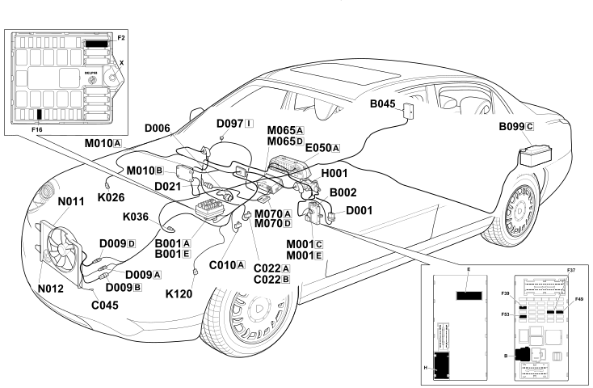

E5020 ENGINE COOLING Location Components
- Path
- Electrical equipment > ELECTRICAL FUNCTIONS > E50 ENGINE CONTROL AND MANAGEMENT SYSTEMS > E5020 ENGINE COOLING > E5020 ENGINE COOLING Location Components
- Kind
- topic
- Applies to
- engines: 2.4 JTD 20V; all production periods
- Interactive page
- https://sloeber94.github.io/elrnDB-lThss/en/#/841007481
Applies to: engines: 2.4 JTD 20V; all production periods
Location Components

Components
Component code | Name | Assembly reference |
|---|---|---|
Engine compartment junction unit | 5505A | |
Junction unit under dashboard | - | |
Luggage compartment junction unit (CVB) | - | |
B099 | SCATOLA MAXI FUSE SU BATTERIA | - |
Left front earth | - | |
Centre dashboard earth | - | |
C045 | FAN EARTH | - |
- | ||
Front/rear coupling | - | |
Front/radiator coupling | - | |
Dashboard/air conditioning-heater coupling | - | |
Short circuit coupling | - | |
Instrument panel | - | |
Ignition switch | - | |
1088B | ||
- | ||
LINEAR SENSOR FOR FANS | 5040B | |
Body computer | - | |
Engine management control unit | 1056B | |
Info-telematic control unit (NIT) | - | |
Climate control sytem control unit | - | |
ENGINE FAN MOTOR | - | |
N012 | - |
Topics linked from this page (20)
- B001 Engine compartment junction unit
- B002 Junction unit under dashboard
- B045 Luggage compartment junction unit (CVB)
- C010 Left front earth
- C022 Centre dashboard earth
- D001 Front/dashboard coupling
- D006 Front/rear coupling
- D009 Front/radiator coupling
- D021 Dashboard/air conditioning-heater coupling
- D097 Short circuit coupling
- E050 Instrument panel
- H001 Ignition switch
- K026 Engine coolant level sensor
- K036 Engine coolant temperature sensor/sender unit
- K120 Linear sensor (for climate control)
- M001 Body computer
- M010 Engine management control unit
- M065 Info-telematic control unit (NIT)
- M070 Climate control system control unit
- N011 Engine fan motor